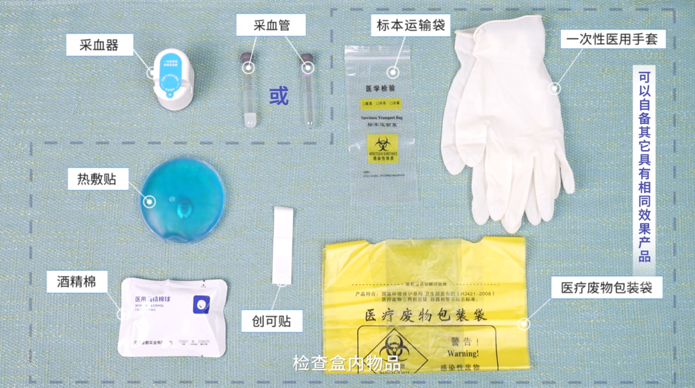
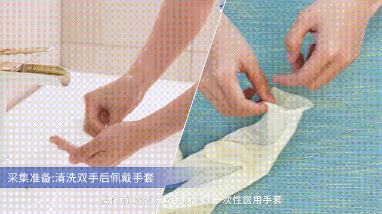
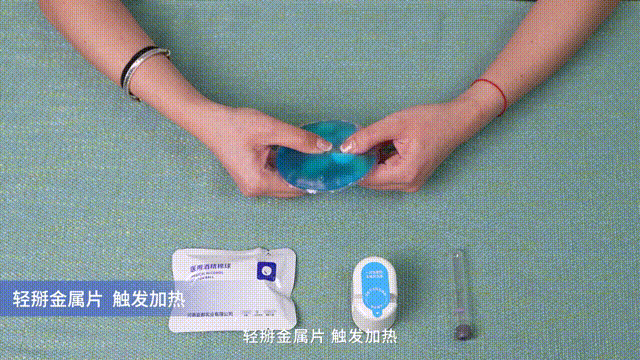
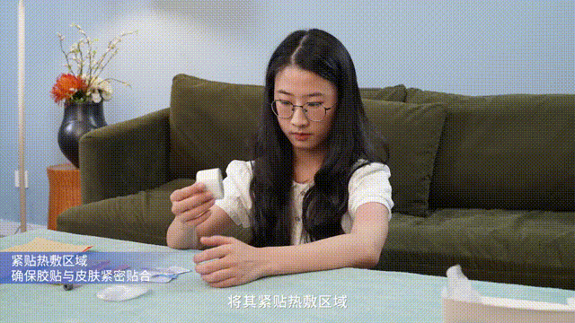
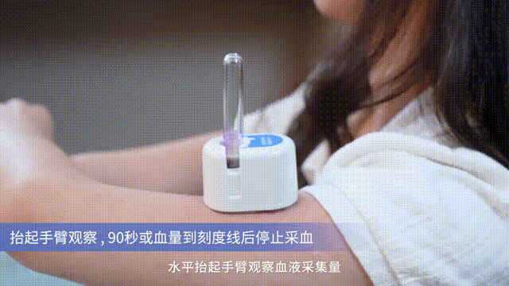
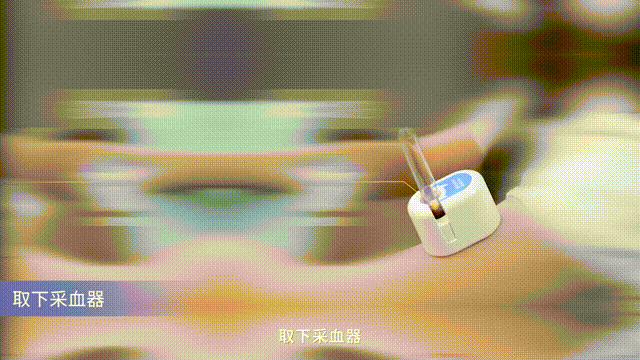
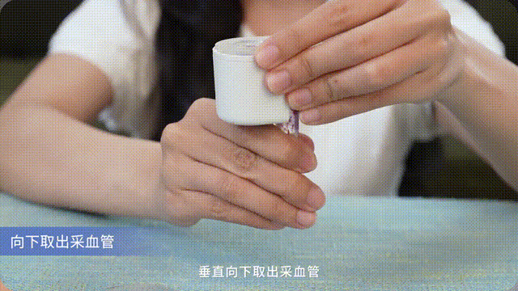
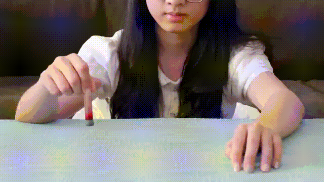

阅读注意事项
- 12 周岁以下人群、凝血机制障碍人群或皮肤易过敏人群请勿使用本产品。
- 禁止海拔 2000 米以上地区使用此产品，否则可能导致危险。
- 皮肤松弛，缺血症，血液外循环障碍人群请谨慎使用该产品。
- 使用本产品前，应对皮肤表面进行清洁，并确保皮肤表面干燥，否则血液样品可能会受到影响。
- 若采血位置持续出血，应使用适当方法进行止血，并尽快就医。
末梢采血器操作说明
步骤1：采集准备

打开包装，检查盒内物品
提前撕开酒精棉和创口贴

清洗双手或佩戴一次性医用手套
步骤2:热敷

轻掰金属片，触发加热
热敷5分钟至皮肤微微泛红,如热敷过程中感觉太烫，可暂停几秒再继续热敷
热敷5分钟计时器
05:00
步骤3：消毒
酒精棉片轻轻擦拭清洁,等待酒精挥发完全
步骤4：开始采血
撕开顶部和底部胶贴

将其紧贴上臂，管槽位置朝下（紧贴后不会掉落，无需一直手扶）

采血管垂直插入管槽，针刺破胶塞即表示采血开始，计时90秒
采血90秒计时
01:30
步骤5：停止采血

水平抬起手臂观察血液采集量，
90秒或血量到达刻度线后停止采血

取下采血器
步骤6：取出采血管

垂直向下取出采血管

胶塞朝下摇晃采血管，使血液与添加剂充分混合
步骤7：后处理
纱布擦拭采血位置，贴上创口贴
将所有耗材妥善装入医疗包装废物袋
将血样放入运输袋，转运或寄回至检测实验室